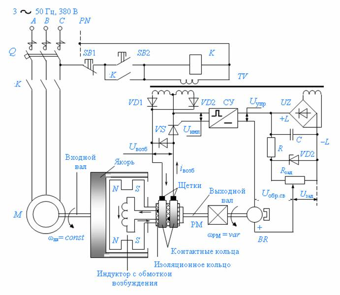
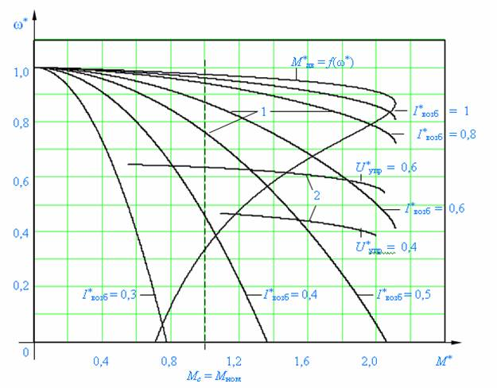
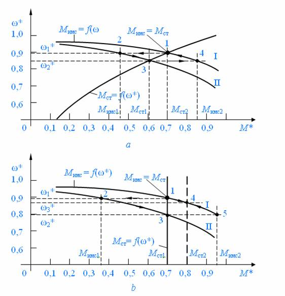

| 8 | Электрооборудование ниткошвейного автомата |
| 8.2 | Электропривод с электромагнитными муфтами |
Для организации требуемых кинематических связей в механических передачах, как при неподвижном состоянии соединяемых валов, так и при их вращении, используются управляемые электромагнитные муфты. В зависимости от вида механической связи электромагнитные муфты делятся на: фрикционные, зубчатые и порошковые. Наибольшее распространение получили фрикционные дисковые муфты. Бывают электромагнитные муфты сцепления и электромагнитные индукторные муфты скольжения. В данном механизме использована
электромагнитная индукторная муфта скольжения. Это электрическая машина, предназначенная для получения регулируемого электропривода при нерегулируемом приводном двигателе (электродвигателе, двигателе внутреннего сгорания и т. п.). Электромагнитная индукторная муфта скольжения устанавливается между приводным двигателем и механизмом. Частота вращения входного вала муфты постоянна, а выходного вала изменяется, в зависимости от тока возбуждения муфты. В принципе электромагнитная индукторная муфта скольжения может выполнить следующие технические задачи:
– регулирование скорости механизма при постоянной скорости приводного двигателя:
– стабилизация скорости механизма при изменении момента статического сопротивления;
– стабилизация скорости механизма при переменной скорости входного вала муфты (приводного двигателя);
– быстрое сцепление или расцепление валов до или во время работы;
– сглаживание ударов механического момента от приводного двигателя к механизму при пуске и от механизма к приводному двигателю во время работы;
– разгон механизма с начальным моментом статического сопротивления большим, чем пусковой момент приводного двигателя;
– ограничение значения передаваемого вращающего момента.
Электромагнитная индукторная муфта скольжения состоит из двух вращающихся частей, расположенных концентрично одна относительно другой (рис.
8. 1). Наружная часть выполняется в форме массивного цилиндра из малоуглеродистой стали, и называется якорем. Внутри этого цилиндра расположен индуктор, представляющий собой двухрядное зубчатое колесо, изготовленное из стали.

Рис. 8. 1. Обобщенная принципиальная схема электропривода с электромагнитной муфтой скольжения
Между двумя вращающимися частями муфты имеется воздушный зазор размером в 1 мм. Якорь муфты крепится на ее входном валу, а индуктор – на выходном. В круговом пазу индуктора между двумя рядами зубцов размещается тороидальная обмотка возбуждения постоянного тока. Питание обмотки возбуждения током осуществляется через контактные кольца и щетки. Контактные кольца установлены на выходном валу муфты, там, где и индуктор. По условиям охлаждения якорь соединяется эластичной муфтой с приводным двигателем, а индуктор – с механизмом либо эластичной муфтой, либо клиноременной передачей. При отсутствии в обмотке возбуждения тока якорь вращается вхолостую, а индуктор неподвижен. При подаче постоянного тока в обмотку возбуждения возникает магнитный поток, замыкающийся через якорь и индуктор. Вследствие неодинаковых магнитных сопротивлений воздушного зазора над зубцами и впадинами индуктора распределение магнитного потока по окружности якоря будет неравномерным. Магнитная индукция имеет максимальное значение над зубцами и минимальное – над впадинами. Приводной двигатель перемещает якорь относительно индуктора, в результате чего в его активной части возникают пульсации магнитного потока, вызывающие вихревые токи. Взаимодействие пульсирующих токов с основным магнитным потоком создает электромагнитный момент, приводящий во вращение индуктор в том же направлении, в котором вращается якорь. Значение электромагнитного момента тем больше, чем больше ток возбуждения. Регулированием тока возбуждения достигается изменение скорости вращения выходного вала муфты и связанного с ним механизма. Характерным условием работы муфты, так же как и асинхронного двигателя, является необходимость скольжения якоря относительно индуктора. Поэтому рассматриваемое устройство носит название электромагнитная (индукторная) муфта скольжения – ЭМС.
Вследствие неодинаковых магнитных сопротивлений воздушного зазора над зубцами и впадинами индуктора распределение магнитного потока по окружности якоря будет неравномерным. Магнитная индукция имеет максимальное значение над зубцами и минимальное – над впадинами. Приводной двигатель перемещает якорь относительно индуктора, в результате чего в его активной части возникают пульсации магнитного потока, вызывающие вихревые токи. Взаимодействие пульсирующих токов с основным магнитным потоком создает электромагнитный момент, приводящий во вращение индуктор в том же направлении, в котором вращается якорь. Значение электромагнитного момента тем больше, чем больше ток возбуждения. Регулированием тока возбуждения достигается изменение скорости вращения выходного вала муфты и связанного с ним механизма. Характерным условием работы муфты, так же как и асинхронного двигателя, является необходимость скольжения якоря относительно индуктора. Поэтому рассматриваемая электромагнитная индукторная муфта носит название электромагнитная (индукторная) муфта скольжения – ЭМС.
Основными показателями электропривода с ЭМС являются: диапазон регулирования скорости выходного вала; плавность регулирования; возможность разгона механизма с моментом сопротивления, большим пускового момента приводного двигателя, устойчивость работы на регулировочных характеристиках, потери в приводе и допустимые нагрузки на регулировочных скоростях.
Диапазон регулирования как отношение значения максимальной скорости к минимальной весьма значителен, поскольку при некотором моменте статического сопротивления скорость выходного вала можно изменять от номинального значения от нуля.
Плавность регулирования. Исходя из принципа действия ЭМС, следует, что плавность определяется исключительно плавностью регулирования тока возбуждения. На рис. 2 приведены механические характеристики ИМС. Здесь приведены линия, характеризующая постоянный момент статического сопротивления, и естественная механическая характеристика приводного асинхронного двигателя. Плавное изменение тока возбуждения приводит к плавному увеличению магнитного потока, электромагнитного момента и перемещение механической характеристики, регулирующей плавное изменение скорости механизма.
Электропривод с электромагнитной муфтой скольжения в замкнутой системе автоматического регулирования (САР) позволяет получить надежный и простой в обслуживании электропривод, позволяющий плавное регулирование скорости в диапазоне D ≈ 10.
Механическая характеристика разомкнутого электропривода с электромагнитной муфтой скольжения может быть описана следующим выражением
где ω0 – угловая скорость входного вала муфты;
ωвыхв – угловая скорость выходного вала муфты;
kм – коэффициент, определяемый параметрами муфты;
Iвозб – ток обмотке возбуждения муфты.

Рис. 8. 2. Механические характеристики электропривода с ЭМС:
М*дв = f(ω*) – механическая характеристика приводного электродвигателя;
1 – механические характеристики при разных токах возбуждения ЭМС – I*возб;
2 – механические характеристики замкнутой системы электропривода с ЭМС
при разных напряжениях задания скорости
U*упр выходного вала ЭМС.
В разомкнутой САР статизм системы по скорости недопустимо велик. При замыкании САР, изменяя коэффициент усиления усилителя тока возбуждения, можно получить желаемое значение статизма механической характеристики замкнутой САР. Для рассматриваемой САР при установившемся режиме справедливы следующие уравнения для средних значений:
Uзад – Uобр.св = Uупр; Iвозб · Rобм = kyс · Uупр; Uобр.св = kобр.св · ωвых в,
где Rобм – сопротивление обмотки возбуждения;
kyс – коэффициент усиления усилителя;
kобр.св – коэффициент обратной связи по скорости.
Решая совместно вышеприведенные уравнения, получим уравнение механической характеристики для замкнутой САР в виде обратной зависимости, т. е. в виде
М = f(ω), так как получение ω = f(M) затруднительно.
Статические характеристики замкнутой системы электропривода с ЭМС показаны на рис.
8. 3, кривые 2. Энергетические показатели электропривода (КПД и cos
φ – коэффициент мощности) с электромагнитной муфтой скольжения не высоки. Это объясняется тем, что при регулировании скорости увеличивается скольжение муфты, а, следовательно, и греющие потери в ней, которые пропорциональны скольжению. Этим самым определяется и небольшой диапазон регулирования скорости, увеличение которого можно достичь увеличением габаритной мощности электромагнитной муфты скольжения и ее приводного двигателя.
Разгон механизма. Приведенный на рис. 8. 2 постоянный момент статического сопротивления показывает, что выполнить пуск такого механизма при непосредственном присоединении его с приводным двигателем невозможно, но выполнимо с помощью ЭМС. Для этого приводной двигатель пускается вхолостую до выхода его на устойчивую часть естественной механической характеристики (s <
sкр). Затем в обмотку возбуждения подается ток, и регулировочные характеристики при возрастании этого тока позволяют получать динамический момент и разгонять механизм до необходимой скорости.
Устойчивость работы на регулировочных характеристиках. Под статической устойчивостью работы муфты понимается автоматическое сохранение скорости вращения выходного вала ЭМС при случайных изменениях (возмущениях) ее после самоустранения причин, вызвавших эти изменения. Под статической устойчивостью понимается способность электропривода автоматически восстанавливать установившийся режим работы после его нарушения без помощи регуляторов, лишь вследствие свойств электропривода, обусловленных механическими характеристиками двигателя и механизма. Возмущающее воздействие может создаваться как со стороны рабочей машины (изменение ее момента статического сопротивления), так и со стороны ИМС (изменение значений напряжения или его частоты, питающих приводной двигатель; изменение тока возбуждения). Покажем это на механических характеристиках ЭМС и производственного механизма с вентиляторным (рис. 8. 3, a) и постоянным моментом статического сопротивления (рис. 8. 3, b).

Рис. 8. 3. Устойчивость работы на регулировочных характеристиках
В точке 1 пересечения характеристик имеем установившийся режим (момент ЭМС равен моменту статической нагрузки
Мимс = Мст). Допустим, что по внешним причинам (уменьшился ток возбуждения, уменьшилось напряжения питания приводного двигателя) механическая характеристика сместилась из положения I в положение II. Таким образом, в силу инерционности электромеханической системы (J∑ пр) она сохранит прежнюю скорость ω1, а прежнем моменте нагрузки момент ЭМС уменьшится с
Мимс до Мимс1 (точка 2). Под действием появившейся недостаточности момента ЭМС возникает замедление электропривода, что приведет к изменению момента ЭМС по его характеристики, а изменение момента механизма по его. Этот процесс закончится, когда характеристики пересекутся в новой точке (точка 3). В этой точке возникнет новое равновесие моментов, но уже при новом значении скорости ω2 и новом значении момента нагрузки
Мст1. В случае исчезновения возникших возмущающих внешних причин система электропривода с ЭМС вернется в прежний установившийся режим – в точку 1, поскольку восстановится ее прежняя механическая характеристика и при скорости ω2
момент ЭМС увеличится до Мимс2 (точка 4). Он создаст динамический момент, под действием которого электропривод начнет разгоняться по характеристике ЭМС, а момент нагрузки возрастать по характеристике механизма. Этот процесс закончится в точке 1, когда уравновесятся момент ЭМС и момент нагрузки. Аналогично действует система электропривода с ЭМС, если нагрузкой является механизм с постоянным моментом статического сопротивления (рис. 8. 3, b). Точно также будет вести себя система, когда положение механической характеристики механизма по внешним причинам изменит свое положение.
В соответствии с уравнением движения статический режим наблюдается при равенстве момента, развиваемого двигателем, и момента статического сопротивления механизма –
Мдв = Мст . При малых изменениях скорости, используя выражение модуля жесткости механической характеристики, динамический момент можно представить в виде , а уравнение движения в виде
Mдин = βΔω, а уравнение движения в виде
После интегрирования и решения в результате этого логарифмического уравнения имеем
Отсюда видно, чтобы Δω → 0 при t → ∞ необходимо иметь β < 0. Учитывая, что ΔМдин
= ΔМдв – ΔМст, будем иметь β = βдв – βст, где βдв – модуль жесткости механической характеристики двигателя, а βст – модуль жесткости механической характеристики механизма в области точки равновесного состояния. Тогда βдв – βст < 0, или βдв < βст, т. е. незначительные приращения момента, скорости механизма должны быть меньше незначительных приращений момента, скорости двигателя.
Потери электромагнитной (индукторной) муфты скольжения. Поступающая на входной вал ЭМС от приводного двигателя механическая мощность в результате электромеханического преобразования в ней создает механическую мощность на выходном валу ЭМС равную
ΔPмех = ΔPs + ΔPв + ΔPг + ΔP1вент + ΔP2вент + ΔP1тр + ΔP2тр,
где ΔPs – потери скольжения, выделяющиеся в виде теплоты в якоре муфты, создаваемые вихревыми токами, которые возникают в его массиве; ΔPв – потери от тока возбуждения, выделяющиеся в виде теплоты в обмотке возбуждения, расположенной на индукторе; ΔPг – потери на гистерезис; ΔP1вент, ΔP2вент – потери на вентиляцию ведущей и ведомой частей ЭМС; ΔP1тр, ΔP2тр – потери на трение в подшипниках ведущей и ведомой частей ЭМС.
По условиям нагрева для муфты скольжения наиболее легким режимом является их работа с механизмами, обладающими вентиляторной нагрузкой, наиболее тяжелым режимом является работа с постоянным моментом статического сопротивления. Тяжелый режим работы сопровождается наибольшими потерями мощности, особенно в низшей части диапазона регулирования скорости, поскольку увеличивается скольжение, а потери прямо пропорциональны скольжению. Несмотря на это в силу высокой надежности и долговечности устройства, простоты эксплуатации, легкой автоматизации процесса управления электромагнитными муфтами, достаточно низкой стоимости электропривод с такими муфтами имеет применение.